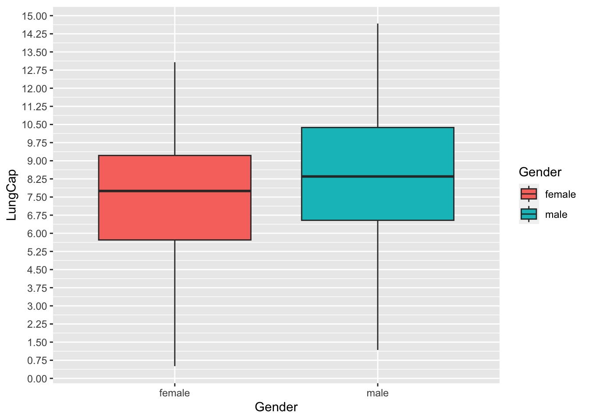

dt %>%select(Gender, LungCap) %>%ggplot(aes(x = Gender, y = LungCap, fill = Gender)) +geom_boxplot() +scale_y_continuous(breaks =seq(from =0, to =15, by =0.75))

In median,quantiles and other measures males have higher lung capacity
# A tibble: 2 × 2
Smoke mean
<chr> <dbl>
1 no 7.77
2 yes 8.65
Smokers have higher lung capacity. Ideally they should be having less as per out premise it does not seem to be the case, May be smoking might not be hurting the lung capacity as it is assumed to be.
table <- table %>%mutate(probability = Frequency / n) print(table)
# A tibble: 5 × 3
x Frequency probability
<dbl> <dbl> <dbl>
1 0 128 0.158
2 1 434 0.536
3 2 160 0.198
4 3 64 0.0790
5 4 24 0.0296
Code
sum(table$x * table$probability)
[1] 1.28642
F
Code
var(table$x)
[1] 2.5
Code
sd(table$x)
[1] 1.581139
Source Code
---title: "Homework_1"author: "Paritosh G"desription: "HW_1"date: "05/26/2023"format: html: toc: true code-fold: true code-copy: true code-tools: truecategories: - hw1 - challenge1 - my name - dataset - ggplot2---```{r}library(tidyverse)library(readxl)dt <-read_excel("/Users/paritosh/Documents/Code_Submission/UMass/603_Spring_2023/posts/_data/LungCapData.xls")```# Q.1)## A```{r}hist(dt$LungCap, freq =FALSE)```## B```{r}dt %>%select(Gender, LungCap) %>%ggplot(aes(x = Gender, y = LungCap, fill = Gender)) +geom_boxplot() +scale_y_continuous(breaks =seq(from =0, to =15, by =0.75))```In median,quantiles and other measures males have higher lung capacity## C```{r}dt %>%select(LungCap,Smoke) %>%group_by(Smoke) %>%summarise(mean =mean(LungCap))```Smokers have higher lung capacity. Ideally they should be having less as per out premise it does not seem to be the case, May be smoking might not be hurting the lung capacity as it is assumed to be.## D- Age less than or equal to 13```{r}dt %>%filter(Age <=13) %>%group_by(Smoke) %>%summarise(LungCap =mean(LungCap))```- Age is equals 14 or 15```{r}dt %>%filter(Age ==14| Age ==15) %>%group_by(Smoke) %>%summarise(LungCap =mean(LungCap))```- Age is 16 or 17```{r}dt %>%filter(Age ==16| Age ==17) %>%group_by(Smoke) %>%summarise(LungCap =mean(LungCap))```- Age is greater than or equal to 18```{r}dt %>%filter(Age >=18) %>%group_by(Smoke) %>%summarise(LungCap =mean(LungCap))```## E- After the age of 13 the lung capacity of non smokers is higher than that of smokers.```{r}# Creating a tibble table <-tibble( x =c(0,1,2,3,4), Frequency =c(128,434,160,64,24)) n <-810```## Q.2)## A```{r}table %>%filter(x ==2) %>%pull(Frequency)/n```## B```{r}table %>%filter(x <2) %>%pull(Frequency) %>%sum()/n```## C```{r}table %>%filter(x <=2) %>%pull(Frequency) %>%sum()/n```## D```{r}table %>%filter(x >2) %>%pull(Frequency) %>%sum()/n```## E```{r}table <- table %>%mutate(probability = Frequency / n) print(table)``````{r}sum(table$x * table$probability)```## F```{r}var(table$x)``````{r}sd(table$x)```